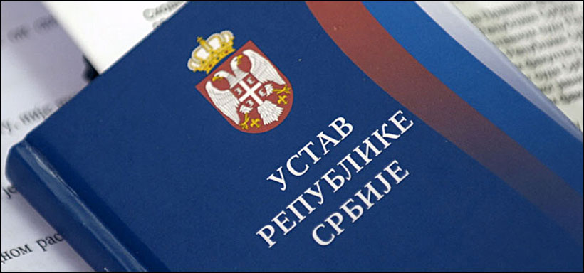

Прочитајте о правосуђу у Србији
Садашњи председник Републике Србије је Александар Вучић који је победио у првом кругу председничких избора 2017. године. После избора Александра Вучића за председниика Републике изабрана је 29. јуна 2017. године нова коалициона Влада листе окупљене око Српске напредне странке и листе окупљене око Социјалистичке партије Србије са нестраначком личношћу Аном Брнабић на месту председника Владе.Тренутни председник Народне скупштине Републике Србије је Маја Гојковић из СНС-а. Народна скупштина Републике Србије је 26. децембра 2007. године усвојила Резолуцију о заштити суверенитета, територијалног интегритета и уставног поретка Републике Србије којом је проглашена „војна неутралност Републике Србије у односу на постојеће војне савезе до евентуалног расписивања референдума на којем би се донела коначна одлука о том питању.
Залаже се за приступање Европској унији, статус кандидата је добила 2012. године. Србија је чланица Организације уједињених нација (ОУН),Организације за европску безбедност и сарадњу (ОЕБС), Савета Европе (СЕ), НАТО програма Партнерство за мир, Међународне организације за миграције и Организације за црноморску економску сарадњу и многих других међународних организација. Има статус посматрача у Светској трговинској организацији и у ОДКБ. Србија има са Републиком Српском потписан споразум о специјалним и паралелним везама. Република Србија је у добрим односима са државама као што су Русија и Грчка. Са пасошем Србије може се без визе путовати у 104 земље (2015. година).
Србија је четврта земља у модерној европској историји, после Француске, Аустрије и Холандије, која има усвојен модерни грађански законик.
Устав Србије одређује да су судови самостални и независни државни органи који штите слободе и права грађана, законом утврђена права и интересе правних субјеката и обезбеђују уставност и законитост.
Судска власт припада судовима и независна је од законодавне и извршне власти. Судске одлуке се доносе у име народа и заснивају се на Уставу, закону, потврђеном међународном уговору и пропису донетом на основу закона. Судске одлуке су обавезне за све и не могу бити предмет вансудске контроле. Судску одлуку може преиспитивати само надлежни суд у законом прописаном поступку. Свако је дужан да поштује извршну судску одлуку.
Судови републичког ранга: Уставни суд, Врховни касациони суд, Привредни апелациони суд, Прекршајни апелациони суд, Управни суд.
Судови опште надлежности:
Основни судови — за територију града, односно једне или више општина
Виши судови — за подручје једног или више основних судова
Апелациони судови — за подручје више виших судова
Врховни касациони суд
Судови посебне надлежности:
Привредни судови — за територију једног или више градова, односно више општина
Привредни апелациони суд — непосредно виши суд за привредне судове
Прекршајни судови — за територију града, односно једне или више општина
Прекршајни апелациони суд — непосредно виши суд за прекршајне судове
Уставни суд је самосталан и независан државни орган који штити уставност и законитост и људска и мањинска права и слободе. Одлуке Уставног суда су коначне, извршне и општеобавезујуће.
Врховни касациони суд је највиши суд у Републици Србији, који је непосредно виши суд за Привредни апелациони суд, Прекршајни апелациони суд, Управни суд и апелационе судове.
Апелациони суд је непосредно виши суд за више судове и основне судове.
Виши суд је непосредно виши суд за основне судове када је то одређено законом.
Напомена: нови систем уређења судова примењује се од 1. јануара 2010. године.
Посетите сајт и информишите се о уставу Србије опшириније 
Назад на почетак странице